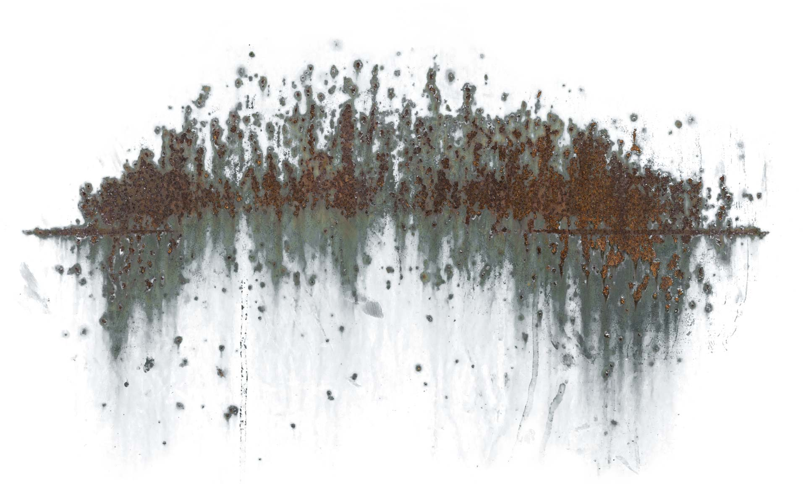

Busy Isn't Faithful
Martha wasn't wrong to serve. Jesus named the anxiety underneath it. We were both just moving too fast to ask why. Hurry is rarely obedience; often it is simply our fear of being quiet with God.
Navigation
Catalogue of Writings · 18 Essays
Eighteen short essays on faith, work, scripture, suffering, and the quiet presence of God in ordinary life.
Martha wasn't wrong to serve. Jesus named the anxiety underneath it. We were both just moving too fast to ask why. Hurry is rarely obedience; often it is simply our fear of being quiet with God.

The myth of self-reliance makes grace seem like charity rather than oxygen. Everything we have is borrowed breath.

No institution slides into holiness by accident. The natural gravity of every human gathering is compromise and comfort.

Doing the right thing quietly rarely wins applause. But God builds character in the shadows where nobody is watching.

We spend our lives trying to prove we are worthy of calling. Grace begins when you realize you were hired on empty hands.

The enemy rarely attacks with a trumpet. He whispers quiet comparisons and distractions until truth feels distant.
EDITORIAL PAUSE
“Faithfulness is rarely glamorous. Most of following Jesus is learning to walk steadily through quiet Tuesday afternoons.”

We fill every quiet corner with noise because in the stillness, we have to meet ourselves — and the God who sees us.
We treat Scripture like a personal horoscope when it was always the grand announcement of a King who has already won.

He was not a late arrival in Bethlehem. He was the lamb in Egypt, the rock in the wilderness, and the promise in the dark.

We condemn scandalous failures while nursing polite resentment and pride. Holiness begins where excuses stop.

Taking promises out of context creates a brittle faith that shatters at the first collision with grief.

Sorrow is real in this broken age, but it was never your destination. Resurrection means joy gets the final word.
God does His deepest work while we think nothing is happening. The silence of prayer is where surrender matures.
True poverty is having plenty to live on and nothing to live for. Generosity is how we loosen money's cold grip.

Sweeping a floor or balancing a spreadsheet can be holy worship when offered with a sincere and unhurried heart.

We traded shared physical presence for social media notifications. Real fellowship demands time, meals, and patience.

Labor is not a curse; frustration in it is. Before the fall, Adam was given a garden to tend with joyful purpose.

We allowed 'what do you do?' to answer 'who are you?'. The self built on a job will crumble when the job ends.